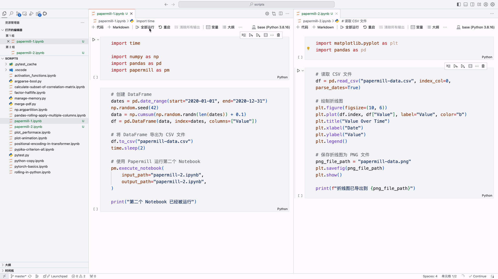

使用 papermill 运行 Jupyter Notebook
当执行两个具有前后依赖关系的 Jupyter Notebook 时，我们需要等待第一个 Notebook 运行完成，再开始运行第二个 Notebook。
一个笨拙的方法是，先预估好第一个 Notebook 运行需要的时间（例如 1 小时），然后在第二个 Notebook 的第一个 Cell 添加：
这将使第二个 Notebook 运行 1 小时后，再运行后续的 Cell。
上述方法需要事先预估第一个 Notebook 运行需要的时间，预估时间过短会导致第二个 Notebook 提前运行，预估时间过长又会导致第二个 Notebook 浪费很多时间在 time.sleep() 上。
本文介绍了如何使用 papermill 运行 Jupyter Notebook，实现控制先后运行两个 Notebook 的功能。
